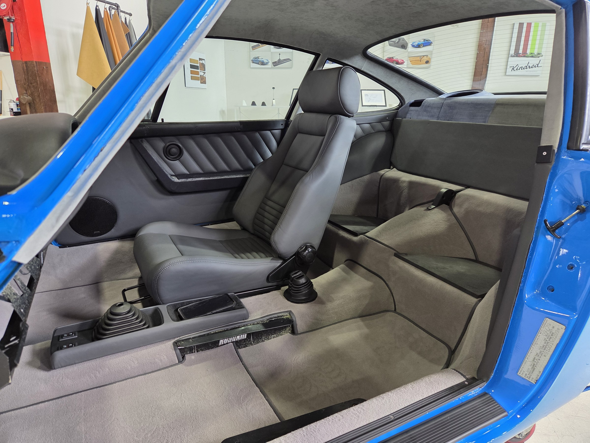
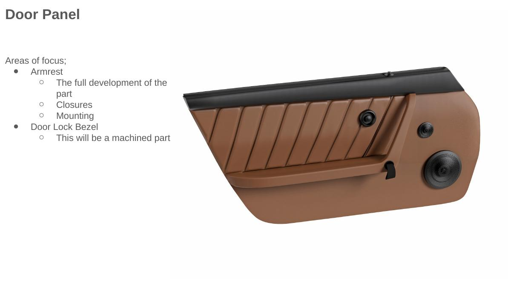
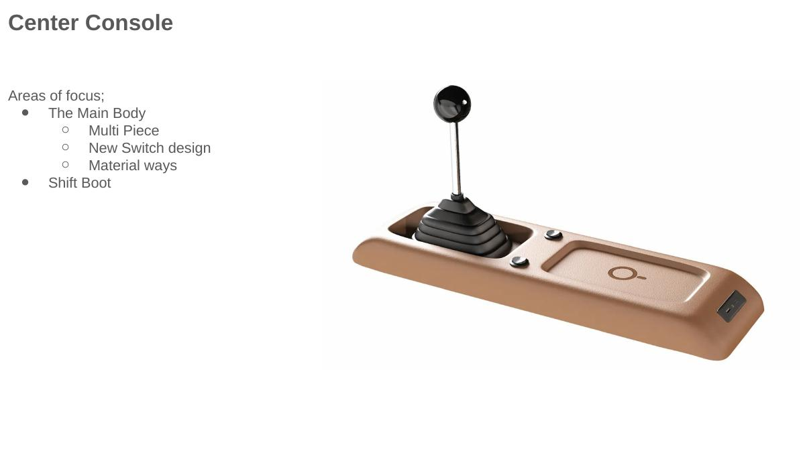
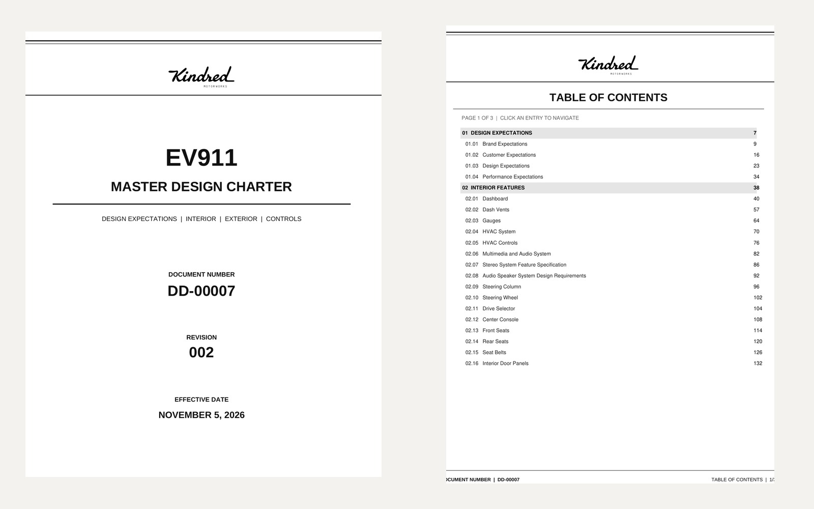
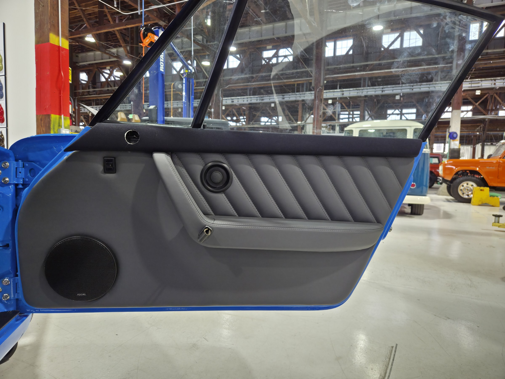
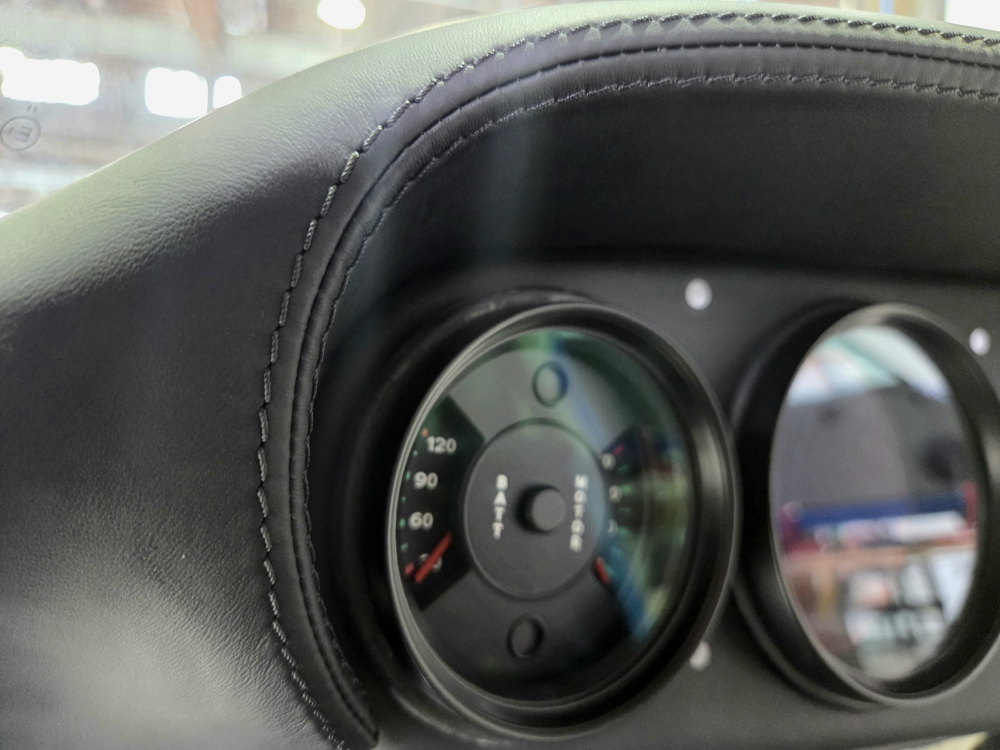

EV911 Product Definition & Development System
As Design Manager, I was responsible for turning preliminary direction into a defined product—and building the systems used to communicate intent, manage maturity, make tradeoffs, and lead the vehicle toward execution.

Own the full path from product definition through execution.
As Design Manager, I own the EV911 interior as a complete product system: product and CMF direction, customer-facing features, Industrial Design guidance, controlled documentation, Design BOM and PLM structure, cost, maturity, program risk, and cross-functional execution.
I stay close to the physical product so those decisions remain grounded in material behavior, manufacturability, fit and finish, timing, and build reality. Charters, feature specifications, decision matrices, trackers, critical paths and reviews keep intent, ownership, risk and next actions visible while giving each discipline room to execute.


Move product knowledge out of conversations and into a controlled system.
I authored Kindred's first high-level Product Charter and developed it into the EV911 Master Design Charter—a controlled framework connecting vehicle expectations, feature requirements, and the Design-to-Engineering handoff.
Brand, Customer, Design and Performance Expectations establish the top-level intent; Interior, Exterior and Controls features carry that intent into executable requirements.

Define the product
Brand · Customer · Design · Performance expectations establish the decision framework.
Translate intent
Vehicle-level direction becomes individual system and feature specifications.
Clarify execution
Material, fit, function, aesthetic intent, maturity, interfaces, and flexibility are made explicit.
Close the loop
Acceptance criteria establish what must be true before the customer-facing condition is considered resolved.
Make the requirement specific without prescribing every solution.
The feature-specification structure became a repeatable way to communicate across disciplines. Each feature defines the objective, maturity, constraints and acceptance criteria so teams understand both the desired result and the freedom they have to achieve it.
The goal is clarity without over-prescription: what must be preserved, what can change, who owns the implementation, and how success will be judged.
Change Objective
Why the feature is changing and what problem the new direction must solve.
Design Maturity
Conceptual direction, defined intent with flexible execution, or highly defined with limited flexibility.
Design Intent
The customer-facing purpose, character, and relationship to the broader vehicle experience.
Material Intent
Material character, quality expectations, compatibility, durability, and relationship to vehicle CMF.
Fit / Dimensional Intent
Packaging, interfaces, alignment, clearances, gap / flush, and visible geometry expectations.
Function / Performance
Customer operation, reliability, ergonomics, integration, serviceability, and technical behavior.
Aesthetic Intent
What the feature should communicate visually and what would make the execution feel wrong.
Special Considerations
Known technical, supplier, process, packaging, safety, or future-development constraints.
Acceptance Criteria
Measurable or observable conditions used to review and release the customer-facing result.
Design Controls
A-surfaces, visible geometry, CMF, product character, customer touchpoints, fit/finish intent, and perceived quality.
Engineering Controls
Construction, packaging, retention, B-side architecture, technical implementation, and manufacturing methodology.
Shared Closure
Interfaces, prototypes, tradeoffs, technical feasibility, acceptance criteria, and final review of the customer-facing condition.
Create visibility around maturity, risk, cost, contingencies, and decisions.
Alongside the Charter, I created practical tools for interior readiness, critical-path and contingency planning, seat down-selection, design cost reduction, made-to-spec costing, assembly dependencies, and blocker ownership.
Each tool answers a management question: What is ready? What is blocked? What decision is needed? What happens if the preferred path misses its date? What is the cost implication? Who owns the next move?
Critical Path + Contingencies
Use trigger dates and pre-defined Plan B ownership to prevent a show-car deadline from silently derailing the production-intent path.
Seat Down-Selection
Evaluate candidates against the full program—not preference alone—so comfort, design, packaging, supplier capability, timing, cost, and production work are visible together.
Part-Level Readiness + Blockers
Separate maturity from schedule and make the remaining steps to Design Freeze and Production Intent explicit at the component level.
Design Cost Reduction + MTS Costing
Treat cost as part of product development: make OTS / MTS choices, part removal, simplification, sourcing changes, and vehicle-level cost implications visible while the design is still evolving.
Align people, technical judgment, and execution.
My leadership approach is hands-on and evidence-led. I direct Industrial Design while working across Mechanical Engineering, Electrical Engineering, Controls, Supply Chain, Production, Upholstery, Fabrication, Paint/Body, General Assembly, suppliers, and executive stakeholders. I translate program needs into clear requirements, priorities, owners, risks, and next actions.
I stay closest to the areas where technical judgment most affects the finished product—materials, foam, soft trim, retention, manufacturability, fit and finish, supplier capability, cost, and timing. When tradeoffs emerge, I use prototypes, data, annotated visuals, controlled documentation, and direct discussion to make consequences visible and drive closure.
Product intent stays coherent while ownership stays distributed.
Requirements · reviews · tradeoffs · priorities · blockers · maturity · cost · risk · physical validation
Stay close to the product while leading the system around it.
I remained directly involved in physical development throughout the program. Requirements informed prototypes, prototypes exposed risk, and the resulting decisions flowed back into the controlled product definition.
That connection keeps product leadership grounded in the real material, part, interface, supplier process, and vehicle—not only the nominal design.



Make soft-goods behavior legible to engineering.
Leather, textiles, foam, laminations, adhesives, and sewn assemblies do not behave like rigid CAD geometry. They stretch, compress, shear, bridge, wrinkle, telegraph, recover, and respond to heat, tension, backing construction, retention, and assembly sequence. My role is to translate those behaviors into engineering inputs early enough to influence the part—not simply troubleshoot it later.
I created the Trim Feasibility & Upholstery Strategy Guide to give Design, Engineering, Surface Development, Vehicle Development, Supply Chain, and Upholstery a shared framework for those decisions: geometry, material behavior, foam and lamination, seam strategy, retention, installation method, risk zones, validation, and release.
Bring soft-goods knowledge further upstream so engineering teams can account for material behavior earlier, reduce avoidable iteration, improve manufacturability, and protect visible quality before geometry and tooling are locked.
The vehicle is the visible result. The deeper contribution is the product-development structure created around it—and the ability to communicate, develop, and lead across the disciplines required to make a complex physical product real.